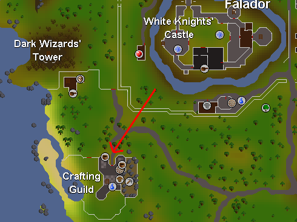
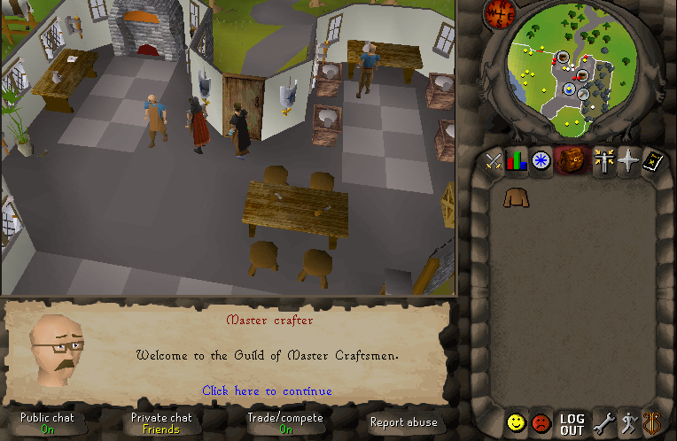
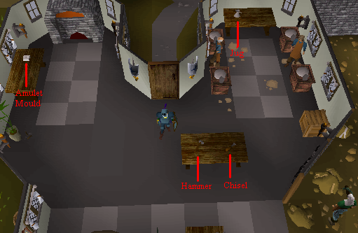
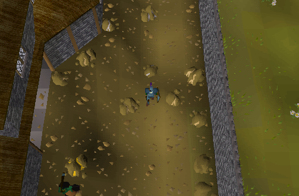
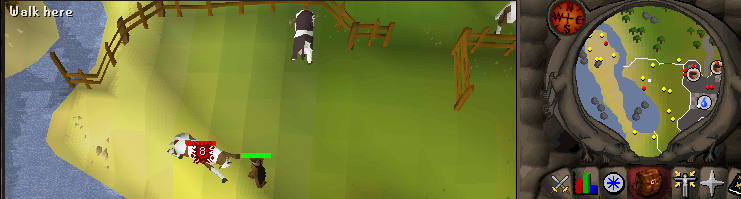
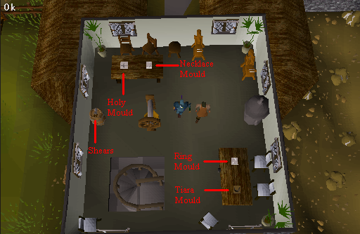

Crafting Guild
Requirements: Must have 40+ Crafting to enter. Must wear a brown apron.Location: The crafting guild is found south of Falador just above Melzar's maze.

As you enter, you will be greeted by the master crafter:

Everything on the first floor:

At the mining area there are:
6 Silver Ore
6 Clay
7 Gold ore

There is a cow pen to the left of the guild for cow hide:

What's upstairs?
The geezer is a tanner who tans you hide for a fixed price.

This Guild guide was written by assassin the stealth. Thanks to Fudge and Thunderdog for corrections.
This Guild guide was entered into the database on Mon, Mar 15, 2004, at 05:41:45 PM by Fudge and was last updated on Sun, Sep 18, 2005, at 04:15:56 PM by DRAVAN.